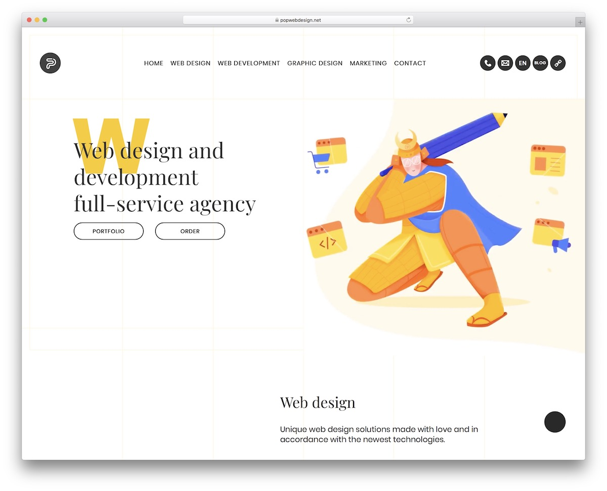

Learning Bootstrap 5 was something that was very difficult. In the beginning, I found it very confusing how the styling was done inside of classes in the HTML code instead of styling the website inside of the CSS file. It was also difficult remembering what Bootstrap 5 code I needed to use to do certain things on the website. While I was working on the practice WODs as homework, I blanked out, not knowing what I should be using and how I should use it. However, with more experience and more practice WODs, I was able to get the hang of it. It still is very difficult and I have to rely on my previous projects to get things to work. I think that it is a neat tool that I should spend more time practicing with because of how useful it is.
I think that Bootstrap 5 can be very useful when it comes to certain design aspects of a website that plain HTML and CSS will be a bit more difficult to do. One of the examples that I learned very early on was dealing with columns in a website. Using HTML and CSS to create columns was not a fun experience. With the practice WOD where we had to create three columns, I was not able to get all of the columns to have the same width. However, using Bootstrap 5, achieving columns in a website was much easier. There are many more scenarios where Bootstrap 5 can improve upon a website’s interface.
Although Bootstrap 5 can be very frustrating and time consuming to learn, it is an important tool. User interface is one of the most important components when creating a product for people to use. It is important that it not only be functional, it should also be convenient and appealing for the users. Bootstrap 5 can achieve this. Because of that, I think that putting in the effort to learn Bootstrap 5 is worth it.